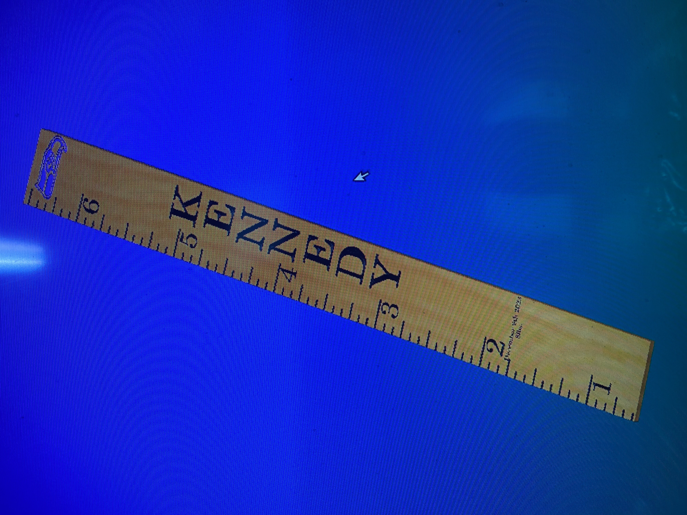

Decorative Plaques
Our workshop makes a variety of wooden plaques and wood carvings for home or office decor.
- Plaques
- Retirement Gifts
- Desk Ornaments
Black Powder Plugs
Producing wide powder horn plugs with animal carving for a local small business.
- Wolf
- Bison
- Elk
- Deer
- Wolf
Custom orders
Creating and designing custom growth charts is a fun way to keep track of how much your child has grown.
- Child's Name
- Customizable
- Natural wood or painted finish on a 6 foot board
Wooden Signs
We create signs for home decor from a variety of woods. Let us know what you want your sign to say and we will do a work up on the computer. We are able to change the material selection to help you decide on your wood choice.
- Maple
- Maple wood is a wonderful easy to work with light colored wood that has good figuring.
- Pine
- Pine wood comes in clear without knots, or knotty for more details.
- Walnut
- Walnut has a wide variety of shades, choose this for a natural dark wooden sign.
- Cedar
- Cedar also comes in clear or knotty. Tennessee Cedar comes in a wide variety of natural swirls of red, white and yellow.
For more information about our business, visit Chuck Christine Wood.